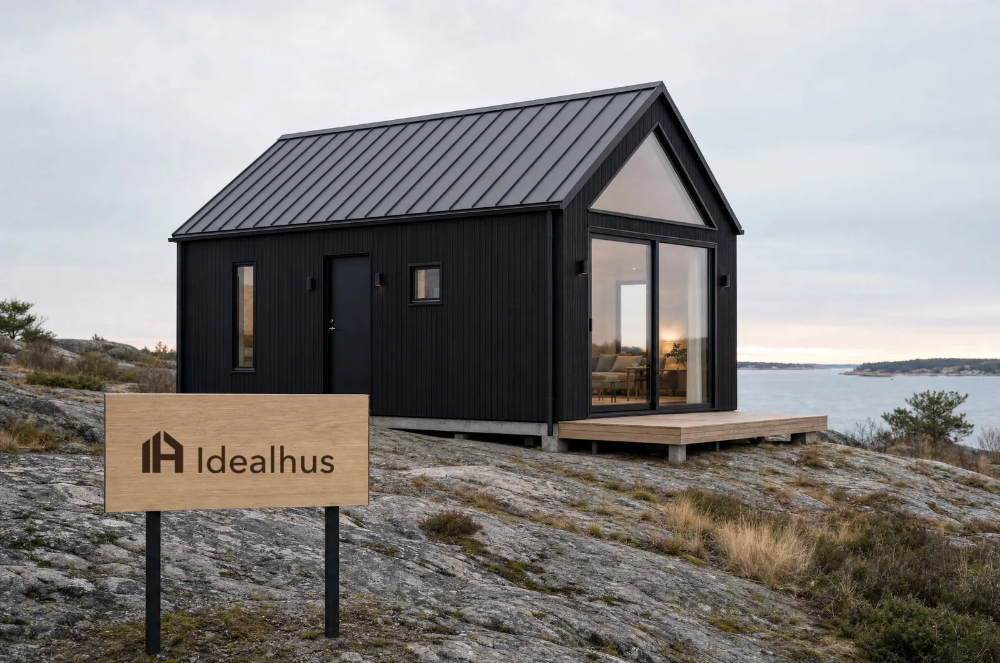

Guide
Attefallshus: vad som gäller efter regeländringen
Den 1 december 2025 skrevs reglerna om. Begreppen attefallshus och friggebod finns inte längre i lagen, anmälningsplikten för själva byggnaden är borta, och du får bygga större utanför detaljplan än inom. Här är vad det betyder i praktiken.

Kort svar
Inom måtten behövs varken bygglov eller anmälan för byggnaden. Ska den ha vatten, avlopp, ventilation eller eldstad krävs ändå anmälan för installationerna, och det gör nästan alla hus man ska kunna bo i.
Räkna på din tomt30m²
per byggnad inom detaljplan50m²
per byggnad utanför detaljplan4,0m
nockhöjd inom detaljplan4,5m
till tomtgränsen
Vad som ändrades
Fram till december 2025 var ordningen den att ett attefallshus krävde en anmälan till kommunen och ett startbesked innan bygget fick börja. Både anmälningsplikten och startbeskedet är nu slopade för komplementbyggnader och komplementbostadshus. Orden attefallshus och friggebod är samtidigt borta ur lagtexten och ersatta av komplementbyggnad och komplementbostadshus.
Före 1 december 2025
- Anmälan till kommunen
- Startbesked innan bygget fick börja
- Attefallshus och friggebod i lagtexten
Nu
- Ingen anmälan för själva byggnaden
- Inget startbesked
- Komplementbyggnad och komplementbostadshus
- Större utanför detaljplan än inom
Vi använder ändå ordet attefallshus här, eftersom det är det ordet alla söker på och känner igen. Det är samma sorts hus som avses.
Måtten
Den stora nyheten är att gränsen skiljer sig åt beroende på om tomten ligger inom detaljplan eller inte. Sammanlagt-kolumnen är en gemensam pott för alla lovfria komplementbyggnader på tomten, inte per hus.
Var ligger tomten?
- Per byggnad
- 30m²
- Sammanlagt på tomten
- 45m²
- Nockhöjd
- 4,0m
- Till tomtgräns
- 4,5m eller närmare med grannens skriftliga medgivande
| Mått | Inom detaljplan | Utanför detaljplan |
|---|---|---|
| Per byggnad | 30 m² | 50 m² |
| Sammanlagt på tomten | 45 m² | 65 m² |
| Nockhöjd | 4,0 m | 4,5 m |
| Till tomtgräns | 4,5 m, eller närmare med grannens skriftliga medgivande | |
När det ändå krävs en anmälan
Anmälningsplikten är borta för byggnaden, men inte för det som händer inuti den. Anmälan krävs fortfarande om åtgärden:
Bärande konstruktion
Berör den bärande konstruktionen.
Brandskydd
Påverkar brandskyddet väsentligt.
Eldstad eller rökkanal
Innehåller eldstad eller rökkanal.
Vatten, avlopp, ventilation
Berör installationer för vatten, avlopp eller ventilation.
Ett hus med kök och badrum har per definition vatten och avlopp. I praktiken passerar de flesta hus man ska kunna bo i alltså ändå kommunen, men för installationerna och inte för byggnaden.
Själva byggnadenIngen anmälan
InstallationernaAnmälan till kommunen
När det krävs bygglov som vanligt
Närmare tomtgränsen
Om huset placeras närmare tomtgränsen än 4,5 meter utan att grannen har gett sitt medgivande.
Kulturvärden och riksintressen
I områden med särskilt kulturhistoriskt värde och inom vissa riksintressen.
Detaljplanen säger annat
Om detaljplanen för området säger att bygglov krävs.
Komplementbyggnad eller komplementbostadshus?
Skillnaden ligger i vad huset ska vara, inte i hur stort det får vara.
Komplementbostadshus
En fullvärdig bostad
- Kök och badrum
- Får bos i året om
Komplementbyggnad
Utan bostadskraven
- Gäststuga
- Kontor
- Förråd
- Bastu
Måtten och avstånden är desamma.
Vanliga frågor
01Krävs det bygglov för ett attefallshus?
Nej, inte inom måtten nedan. Sedan 1 december 2025 krävs varken bygglov eller anmälan för själva byggnaden. Men ska huset ha vatten, avlopp, ventilation eller eldstad krävs fortfarande en anmälan för de installationerna, och det gör de flesta hus som ska gå att bo i.
02Hur stort får huset vara?
Inom detaljplan högst 30 m² per byggnad och 45 m² sammanlagt på tomten, med en nockhöjd på 4,0 meter. Utanför detaljplan är gränserna 50 m² per byggnad, 65 m² sammanlagt och 4,5 meter i nockhöjd.
03Hur nära tomtgränsen får huset stå?
Minst 4,5 meter, om inte grannen ger sitt skriftliga medgivande. Utan medgivande krävs bygglov för en placering närmare gränsen.
04Får jag bo i huset året om?
Ja, om det byggs som komplementbostadshus. Då ska det uppfylla kraven på en fullvärdig bostad, med kök och badrum. En komplementbyggnad utan de kraven får användas som förråd, gäststuga, kontor eller bastu.
05Finns det platser där reglerna inte gäller?
Ja. Inom strandskyddat område krävs dispens även för en byggnad som annars är lovbefriad. I områden med särskilt kulturhistoriskt värde, inom vissa riksintressen och där detaljplanen säger annat krävs bygglov som vanligt. Kommunen avgör i det enskilda fallet.
Vem gör vad
Vi
Tar fram ritningar och underlag och säger vad som gäller för just din tomt.
Du
Är byggherre och står för kontakten med kommunen när något ska anmälas.
Hela ordningen, steg för steg, finns på Så fungerar det.
Uppgifterna är kontrollerade den 8 september 2026 mot kommunala och branschgemensamma sammanställningar av regeländringen. Reglerna kan ändras och kommunen avgör i det enskilda fallet. Stäm alltid av med din byggnadsnämnd innan du börjar bygga.
Nästa steg
Vad får du bygga på din tomt?
Svara på fem frågor om tomten, så räknar vi ut hur stort attefallshus som ryms, hur högt det får bli och vad du behöver prata med kommunen om.